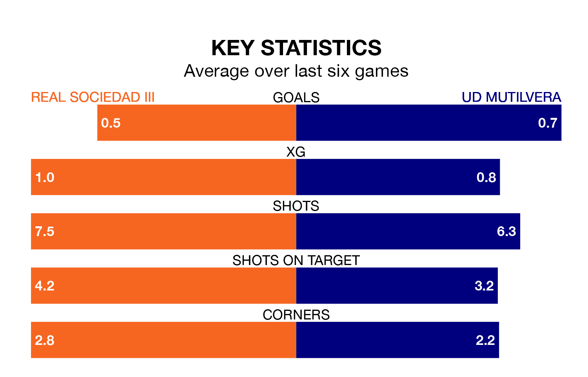

Real Sociedad III face UD Mutilvera at the Estadio Zubieta XXI on late Sunday looking to secure a first win in seven Segunda División RFEF Group 2 games.
Sociedad III have lost three and drawn three matches since they last earned three points – against UD Logroñés on December 3.
They face a Mutilvera side who have won three and drawn one over that time.
With 11 goals in 20 games so far this season, Mutilvera are the league's second-lowest scorers with 0.6 goals per game. And they are conceding more than average, letting in 25 goals at a rate of 1.2 per game.
Sociedad III are also below average scorers, with 1.0 goal per game, compared to a league average of 1.1. They have conceded 0.8 goals per game.
In the last five years, Sociedad III and Mutilvera have played each other on five occasions. Sociedad III won three of them and they drew twice.
On average, Sociedad III scored 1.8 goals and Mutilvera 0.6 in those matches.
Their last meeting was on September 23, when they played out a 0-0 draw.
The hosts are seventh in the table after 20 games, of which they have won eight and drawn five, earning 29 points.
The away side are five places behind Sociedad III in 12th, with six wins and five draws putting them on 23 points.
Sociedad III's last match was on January 28, a 3-1 loss against Real Zaragoza B.
Mutilvera beat Náxara CD 1-0 last time out, on January 27.
Updated: 10:40 (UTC), 01/02/24